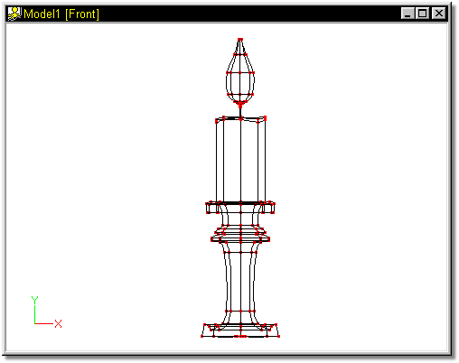
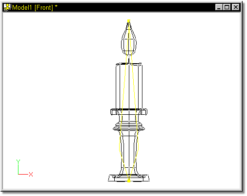
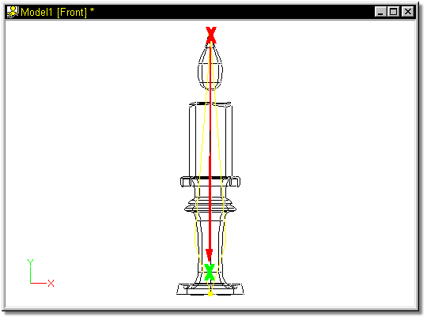
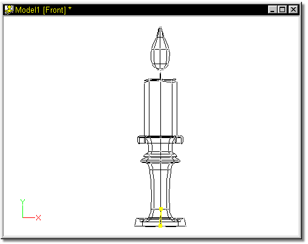

Remember that Candle from the modeling Quick Start? It’s time to pull that
project file up and place some bones into the model. Start MH3D, and if you have a
project open, select Close from the Project menu.
Click the Open button, and locate the Candle.prj file that was created
previously. The window should open looking similar to Figure 1.



Click the Bones Mode button on the Mode Toolbar.
The screen should change to Figure 2.

Figure 2
Move the top end of the default bone down towards the bottom of the candle holder by grabbing the handle of the bone (red X) and dragging it in the direction shown by the red arrow. Release the mouse button where the green X is shown in Figure 3.

Figure 3
Figure 4 shows the results of the move:
